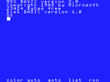
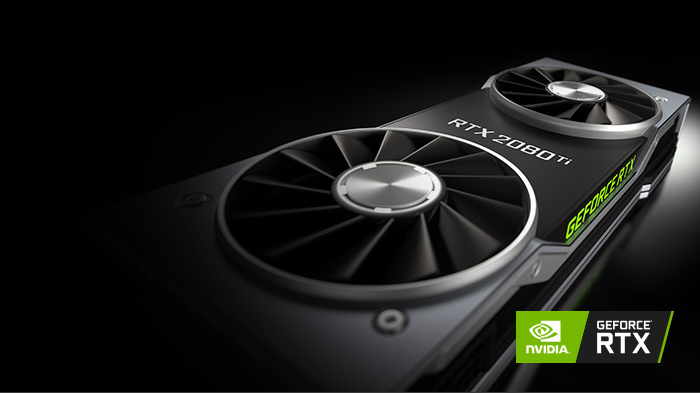

Native code — why low-level code is the only way to get performance We didn’t build on top of any wrappers — we wanted full hardware control and the ability to manipulate every element of the stream to reduce latency as much as possible. On our test setup on a LAN ethernet connection, Parsec adds only 7 milliseconds of latency to your game. Remember, your ping is important, so if you're far from the computer, there will be more lag.
Peer-to-peer NAT traversal for co-playing with friends Nothing makes you rage quit when you're just trying to play some games with friends faster than a bunch of networking errors. Making sure two computers can connect in a peer-to-peer connection with as little latency as possible is really difficult. We've spent years optimizing our NAT traversal techniques to give you the highest likelihood of connecting on the first try. 95% of our users successfully co-play together due to this effort.
Hardware encoding and decoding plus frame timing optimizations We support the h.264 codec and low latency desktop capture, with a zero-copy GPU pipeline to the encoder. You can use whatever GPU you want — AMD gets the same love as Nvidia here. We use hardware decoding whenever possible on every platform we support, and we have low level frame timing and synchronization optimizations for a smooth 60 FPS stream.
